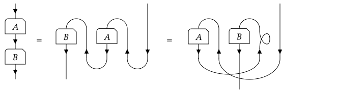
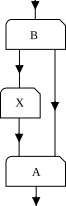

Tensor contractions and tensor networks
One of the most important operations with tensor maps is to compose them, more generally known as contracting them. As mentioned in the section on category theory, a typical composition of maps in a ribbon category can graphically be represented as a planar arrangement of the morphisms (i.e. tensor maps, boxes with lines emanating from top and bottom, corresponding to source and target, i.e. domain and codomain), where the lines connecting the source and targets of the different morphisms should be thought of as ribbons, that can braid over or underneath each other, and that can twist. Technically, we can embed this diagram in $ℝ × [0,1]$ and attach all the unconnected line endings corresponding to objects in the source at some position $(x,0)$ for $x∈ℝ$, and all line endings corresponding to objects in the target at some position $(x,1)$. The resulting morphism is then invariant under what is known as framed three-dimensional isotopy, i.e. three-dimensional rearrangements of the morphism that respect the rules of boxes connected by ribbons whose open endings are kept fixed. Such a two-dimensional diagram cannot easily be encoded in a single line of code.
However, things simplify when the braiding is symmetric (such that over- and under- crossings become equivalent, i.e. just crossings), and when twists, i.e. self-crossings in this case, are trivial. This amounts to BraidingStyle(I) == Bosonic() in the language of TensorKit.jl, and is true for any subcategory of $\mathbf{Vect}$, i.e. ordinary tensors, possibly with some symmetry constraint. The case of $\mathbf{SVect}$ and its subcategories, and more general categories, are discussed below.
In the case of trivial twists, we can deform the diagram such that we first combine every morphism with a number of coevaluations $η$ so as to represent it as a tensor, i.e. with a trivial domain. We can then rearrange the morphism to be all lined up horizontally, where the original morphism compositions are now being performed by evaluations $ϵ$. This process will generate a number of crossings and twists, where the latter can be omitted because they act trivially. Similarly, double crossings can also be omitted. As a consequence, the diagram, or the morphism it represents, is completely specified by the tensors it is composed of, and which indices between the different tensors are connected, via the evaluation $ϵ$, and which indices make up the source and target of the resulting morphism. If we also compose the resulting morphisms with coevaluations so that it has a trivial domain, we just have one type of unconnected lines, henceforth called open indices. We sketch such a rearrangement in the following picture:

Hence, we can now specify such a tensor diagram, henceforth called a tensor contraction or also tensor network, using a one-dimensional syntax that mimics abstract index notation and specifies which indices are connected by the evaluation map using Einstein's summation convention. Indeed, for BraidingStyle(I) == Bosonic(), such a tensor contraction can take the same format as if all tensors were just multi-dimensional arrays. For this, we rely on the interface provided by the package TensorOperations.jl.
The above picture would be encoded as
@tensor E[a, b, c, d, e] := A[v, w, d, x] * B[y, z, c, x] * C[v, e, y, b] * D[a, w, z]or
@tensor E[:] := A[1, 2, -4, 3] * B[4, 5, -3, 3] * C[1, -5, 4, -2] * D[-1, 2, 5]where the latter syntax is known as NCON-style, and labels the unconnected or outgoing indices with negative integers, and the contracted indices with positive integers.
A number of remarks are in order. TensorOperations.jl accepts both integers and any valid variable name as dummy label for indices, and everything in between [ ] is not resolved in the current context but interpreted as a dummy label. Here, we label the indices of a TensorMap, like A::TensorMap{T, S, N₁, N₂}, in a linear fashion, where the first position corresponds to the first space in codomain(A), and so forth, up to position N₁. Index N₁ + 1 then corresponds to the first space in domain(A). However, because we have applied the coevaluation $η$, it actually corresponds to the corresponding dual space, in accordance with the interface of space(A, i), and as indicated by the dotted box around $A$ in the above picture. The same holds for the other tensor maps. Note that our convention also requires that we braid indices that we brought from the domain to the codomain, and so this is only unambiguous for a symmetric braiding, where there is a unique way to permute the indices.
With the current syntax, we create a new object E because we use the definition operator :=. Furthermore, with the current syntax, it will be a Tensor, i.e. it will have a trivial domain, and correspond to the dotted box in the picture above, rather than the actual morphism E. We can also directly define E with the correct codomain and domain by rather using
@tensor E[a b c;d e] := A[v, w, d, x] * B[y, z, c, x] * C[v, e, y, b] * D[a, w, z]or
@tensor E[(a, b, c);(d, e)] := A[v, w, d, x] * B[y, z, c, x] * C[v, e, y, b] * D[a, w, z]where the latter syntax can also be used when the codomain is empty. When using the assignment operator =, the TensorMap E is assumed to exist and the contents will be written to the currently allocated memory. Note that for existing tensors, both on the left hand side and right hand side, trying to specify the indices in the domain and the codomain separately using the above syntax, has no effect, as the bipartition of indices is already fixed by the existing object. Hence, if E has been created by the previous line of code, all of the following lines are now equivalent
@tensor E[(a, b, c);(d, e)] = A[v, w, d, x] * B[y, z, c, x] * C[v, e, y, b] * D[a, w, z]
@tensor E[a, b, c, d, e] = A[v w d; x] * B[(y, z, c); (x, )] * C[v e y; b] * D[a, w, z]
@tensor E[a b; c d e] = A[v; w d x] * B[y, z, c, x] * C[v, e, y, b] * D[a w; z]and none of those will or can change the partition of the indices of E into its codomain and its domain.
Two final remarks are in order. Firstly, the order of the tensors appearing on the right hand side is irrelevant, as we can reorder them by using the allowed moves of the Penrose graphical calculus, which yields some crossings and a twist. As the latter is trivial, it can be omitted, and we just use the same rules to evaluate the newly ordered tensor network. For the particular case of matrix-matrix multiplication, which also captures more general settings by appropriately combining spaces into a single line, we indeed find

or thus, the following two lines of code yield the same result
@tensor C[i, j] := B[i, k] * A[k, j]
@tensor C[i, j] := A[k, j] * B[i, k]Reordering of tensors can be used internally by the @tensor macro to evaluate the contraction in a more efficient manner. In particular, the NCON-style of specifying the contraction gives the user control over the order, and there are other macros, such as @tensoropt, that try to automate this process. There is also an @ncon macro and ncon function, and we recommend reading the manual of TensorOperations.jl to learn more about the possibilities and how they work.
A final remark involves the use of adjoints of tensors. The current framework is such that the user should not be too worried about the actual bipartition into codomain and domain of a given TensorMap instance. Indeed, for tensor contractions the @tensor macro figures out the correct manipulations automatically. However, when wanting to use the adjoint of an instance t::TensorMap{T, S, N₁, N₂}, the resulting adjoint(t) is an AbstractTensorMap{T, S, N₂, N₁} and one needs to know the values of N₁ and N₂ to know exactly where the ith index of t will end up in adjoint(t), and hence the index order of t'. Within the @tensor macro, one can instead use conj() on the whole index expression so as to be able to use the original index ordering of t. For example, for TensorMap{T, S, 1, 1} instances, this yields exactly the equivalence one expects, namely one between the following two expressions:
@tensor C[i, j] := B'[i, k] * A[k, j]
@tensor C[i, j] := conj(B[k, i]) * A[k, j]For e.g. an instance A::TensorMap{T, S, 3, 2}, the following two syntaxes have the same effect within an @tensor expression: conj(A[a, b, c, d, e]) and A'[d, e, a, b, c].
Fermionic tensor contractions
Whenever BraidingStyle(i) == Fermionic(), some complications come up. The most important distinction from the Bosonic() case is that twists are no longer trivial, such that we must be careful about how we can manipulate network diagrams.
To illustrate these complications, we take a look at a concrete example first, and study the following tensor network:

V₁ = Vect[FermionParity](0 => 1, 1 => 1)
V₂ = Vect[FermionParity](0 => 2, 1 => 2)
A = rand(V₁ ← V₁ ⊗ V₂)
X = rand(V₁ ← V₁)
B = rand(V₁ ⊗ V₂ ← V₁)2×4←2 TensorMap{Float64, Vect[FermionParity], 2, 1, Vector{Float64}}:
codomain: (Vect[FermionParity](0 => 1, 1 => 1) ⊗ Vect[FermionParity](0 => 2, 1 => 2))
domain: ⊗(Vect[FermionParity](0 => 1, 1 => 1))
blocks:
* FermionParity(0) => 4×1 reshape(view(::Vector{Float64}, 1:4), 4, 1) with eltype Float64:
0.26650339428903547
0.43984871484065813
0.07959637148628651
0.47893969387029134
* FermionParity(1) => 4×1 reshape(view(::Vector{Float64}, 5:8), 4, 1) with eltype Float64:
0.6692237081790192
0.28652796041949224
0.4261423101800662
0.889264345247872We can expand this into binary contractions, by first contracting X with A, and then contracting the result with B:
AX = repartition(A, 2, 1) * X
AXB = repartition(AX, 1, 2) * B2←2 TensorMap{Float64, Vect[FermionParity], 1, 1, Vector{Float64}}:
codomain: ⊗(Vect[FermionParity](0 => 1, 1 => 1))
domain: ⊗(Vect[FermionParity](0 => 1, 1 => 1))
blocks:
* FermionParity(0) => 1×1 reshape(view(::Vector{Float64}, 1:1), 1, 1) with eltype Float64:
0.16607521598471442
* FermionParity(1) => 1×1 reshape(view(::Vector{Float64}, 2:2), 1, 1) with eltype Float64:
0.5782833847183001Alternatively, we could decide that we first wish to contract A with B, and only then contract the result with X:
AB = permute(A, ((1, 2), (3,))) * permute(B, ((2,), (1, 3)))
ABX = repartition(permute(AB, ((1, 4), (2, 3))) * repartition(X, 2, 0), 1, 1)2←2 TensorMap{Float64, Vect[FermionParity], 1, 1, Vector{Float64}}:
codomain: ⊗(Vect[FermionParity](0 => 1, 1 => 1))
domain: ⊗(Vect[FermionParity](0 => 1, 1 => 1))
blocks:
* FermionParity(0) => 1×1 reshape(view(::Vector{Float64}, 1:1), 1, 1) with eltype Float64:
0.09823076373984735
* FermionParity(1) => 1×1 reshape(view(::Vector{Float64}, 2:2), 1, 1) with eltype Float64:
0.30028022971532103This is where the issue becomes clearer, as the results are no longer equal:
AXB ≈ ABXfalseTrivializing the twist
So what happened? If we carefully inspect what we actually computed here, we can show that in order to deform one diagram into the other, we have to introduce a self-crossing, which then altered the result. While the example here is still simple to follow, in general we would like that the result of @tensor expressions does not depend on the input order of the tensors. This is especially true for larger expressions where we wish to dynamically compute the optimal contraction order, as this would alter the order in a very non-transparent manner.
The way out of this effectively consists of absorbing this twist in the coevaluation map $η$. This modified map $η′ := η ∘ θ$ where $θ$ represents the twist ensures that the result no longer depends on the order of evaluation. In particular, one can show that any time two tensor legs would swap places, we would simultaneously exchange one evaluation map $ϵ$ for a coevaluation $η′$, while also incurring a twist $θ$ such that both cancel out. To make this concrete, we show how our previous example now leads to a unique result:
function fermion_mul(A, B)
return A * twist(B, findall(isdual, codomain(B).spaces))
end
# order I:
AX = fermion_mul(repartition(A, 2, 1), X)
AXB = fermion_mul(repartition(AX, 1, 2) , B)
# order II:
AB = fermion_mul(permute(A, ((1, 2), (3,))), permute(B, ((2,), (1, 3))))
ABX = repartition(fermion_mul(permute(AB, ((1, 4), (2, 3))), repartition(X, 2, 0)), 1, 1)
AXB ≈ ABXtrueThis is the so-called supertrace formalism, and is effectively what @tensor ends up implementing for fermionic contractions. For more details about this formalism, we refer to [Mortier].
# @tensor
@tensor result[-1; -2] := A[-1; 1 2] * X[1; 3] * B[3 2; -2]
AXB ≈ resulttrue(Non)-unitarity
While this modified $η′$ solves the issues related to contractions, it does come at a cost. The main issue is that this map does not constitute a positive definite map, and in particular is at odds with a positive inner product. Such a positive inner product is however required to properly define (orthogonal) factorizations, non-negative norms, etc.
Therefore, we reserve the supertrace formalism exclusively for tensor contractions. For matrix-like operations such as factorizations, matrix functions, norms, etc, we retain the positive definite inner product. It is also always possible to manually emulate one or the other, by inserting appropriate calls to twist. In what follows, we simply showcase some noteworthy differences between the two formalisms, as these can be a common source of errors. Throughout, we use the following simple fermionic tensor as a running example:
V = Vect[FermionParity](0 => 1, 1 => 1)
t = ones(V' ← V')2←2 TensorMap{Float64, Vect[FermionParity], 1, 1, Vector{Float64}}:
codomain: ⊗(Vect[FermionParity](0 => 1, 1 => 1)')
domain: ⊗(Vect[FermionParity](0 => 1, 1 => 1)')
blocks:
* FermionParity(0) => 1×1 reshape(view(::Vector{Float64}, 1:1), 1, 1) with eltype Float64:
1.0
* FermionParity(1) => 1×1 reshape(view(::Vector{Float64}, 2:2), 1, 1) with eltype Float64:
1.0- Computing a norm via a contraction: the squared norm of
t, computed via the supertrace contraction, no longer agrees withnorm(t)^2. In particular, the@tensorself-contraction can even vanish for a manifestly non-zero tensor:
norm(t)^2, @tensor conj(t[a; b]) * t[a; b](2.0000000000000004, 0.0)Inserting a twist on the contracted codomain index cancels the twist that @tensor automatically introduces, and recovers the trace-formalism result:
norm(t)^2 ≈ @tensor conj(t[a; b]) * twist(t, 1)[a; b]true- Using unitarity to simplify
U * U' ≈ I: the factorUreturned bysvd_compactis left-isometric in the trace sense, i.e.U' * U ≈ id(domain(U))as a matrix product, but this identity no longer holds when the same product is written as a tensor contraction:
U, S, Vᴴ = svd_compact(t)
@tensor UdU[i; j] := conj(U[k; i]) * U[k; j]
U' * U ≈ id(domain(U)), UdU ≈ id(domain(U))(true, false)The matrix-mul version satisfies orthogonality, but the @tensor version differs by the fermionic twist on the contracted index. This is a common pitfall whenever an isometry obtained from a factorization is fed straight into an @tensor expression.
- Computing a matrix function through a manual Taylor expansion: matrix functions such as
exp,log,sqrtare defined through the matrix product (trace formalism) and therefore have no immediate counterpart in terms of@tensorexpressions. In particular, replacing each matrix power by an@tensorself-contraction yields a different result, even at low order:
function exp_via_tensor(t, order)
out = id(domain(t))
tn = id(domain(t))
for n in 1:order
@tensor next[a; b] := tn[a; c] * t[c; b]
tn = next
out += tn / factorial(n)
end
return out
end
exp(t) ≈ exp_via_tensor(t, 10)falseThe same Taylor expansion written with the matrix product instead does reproduce exp(t), confirming that the discrepancy is in the contraction step rather than the truncation order:
exp_via_mul(t, order) = sum(t^n / factorial(n) for n in 0:order)
exp(t) ≈ exp_via_mul(t, 10)trueBoth the supertrace and the trace formalism constitute valid, consistent frameworks, each with their own advantages and disadvantages. For practical applications, it can be convenient to select one or the other, and to take special care when trying to use properties of one framework in the other. In general, each case must be carefully evaluated to check which framework is correct, but a good rule of thumb is to be careful when using properties of orthogonality in combination with @tensor expressions.
Anyonic tensor contractions
When BraidingStyle(I) == Anyonic(), the situation is more restrictive still. The relevant group describing the exchange of two lines is no longer the permutation group but the full braid group, so even a double crossing is non-trivial and there is no preferred way to reorder lines in a diagram. As a consequence, the implicit reordering that @tensor performs is no longer well-defined, and attempting an anyonic contraction with @tensor raises a SectorMismatch error.
V = Vect[FibonacciAnyon](:I => 1, :τ => 1)
A = randn(ComplexF64, V ← V ⊗ V)
B = randn(ComplexF64, V ⊗ V ← V)
try
@tensor C[i; j] := A[i; k l] * B[k l; j]
catch err
err
endSectorMismatch{String}("only tensors with symmetric braiding rules can be contracted; try `@planar` instead")The way out is to write the contraction as a literal planar diagram, in which every required crossing is made explicit through a braiding tensor. This is what the @planar macro provides.
The @planar macro
The surface syntax of @planar is identical to that of @tensor, but with a number of additional restrictions.
A diagram is planar in this context when it can be drawn on a sheet of paper without any of its lines crossing, and additionally with all open legs ending on the exterior of the diagram. The second condition rules out arrangements in which an open leg is enclosed by contracted ones, even if the resulting diagram itself contains no crossings.
For the macro to recognise this layout unambiguously, the codomain–domain separator ; must be present in every index list. It fixes which legs sit on the top (codomain) and which on the bottom (domain) of each tensor box, and changing the partition can change whether a given index pattern is planar.
Planarity is moreover enforced for each binary contraction, not only for the overall expression. The pairwise contraction order can therefore matter: an expression whose final layout is planar may still be rejected when an intermediate contraction produces a non-planar subdiagram. Manually controlling the order, for instance via parentheses, NCON-style numbering, or the order=... keyword, is still supported, but must be done with care.
Finally, the name τ is reserved for the braiding tensor: every literal crossing must be written out as a τ[a b; c d] factor, with its adjoint τ'[a b; c d] representing the inverse (under-)crossing. The BraidingTensor itself does not need to be constructed by the user; the macro figures out the appropriate spaces from the surrounding contraction. Any layout the macro cannot identify as planar is rejected at parse time with ArgumentError("not a planar diagram expression: ...").
To make this concrete, consider the contraction A * B for two anyonic tensors, written in a manifestly planar fashion:
@planar C1[i; j] := A[i; k l] * B[k l; j]2.618033988749895←2.618033988749895 TensorMap{ComplexF64, Vect[FibonacciAnyon], 1, 1, Vector{ComplexF64}}:
codomain: ⊗(Vect[FibonacciAnyon](:I => 1, :τ => 1))
domain: ⊗(Vect[FibonacciAnyon](:I => 1, :τ => 1))
blocks:
* FibonacciAnyon(:I) => 1×1 reshape(view(::Vector{ComplexF64}, 1:1), 1, 1) with eltype ComplexF64:
-0.18932064507244828 + 0.012557241535914435im
* FibonacciAnyon(:τ) => 1×1 reshape(view(::Vector{ComplexF64}, 2:2), 1, 1) with eltype ComplexF64:
0.8967237764655684 - 1.2913566139025598imInserting an explicit braiding tensor on the contracted legs gives a genuinely different result, reflecting the non-trivial R-symbols of the anyon braiding:
@planar C2[i; j] := A[i; k l] * τ[k l; m n] * B[m n; j]
C1 ≈ C2falseBoth expressions correspond to valid, but distinct, tensor network diagrams, and the choice between them must be made explicit by the user.
The @plansor macro
For code that should work uniformly across braiding styles, TensorKit provides the @plansor macro. It inspects the BraidingStyle of the first non-braiding tensor in the expression and dispatches to @tensor for Bosonic sectors, and to @planar otherwise. Any explicit τ factors that appear in the expression are silently removed in the bosonic case, where braidings are trivial, and faithfully evaluated otherwise. This makes @plansor the natural choice for generic library code that wishes to remain correct regardless of the underlying symmetry.
One important thing to note here is that in the specific case of BraidingStyle(I) == Fermionic(), the @planar macro is part of the trace formalism, and not the supertrace formalism. Looking back at the examples in Fermionic tensor contractions, these all consist of planar diagrams, so we could also have used @planar to achieve the desired outcomes. Since in this case @tensor and @planar yield different results, the @plansor macro will fall back to @tensor only when BraidingStyle(I) == Bosonic(), and not when it is Fermionic().
- Mortier
Mortier, Q., Devos, L., Burgelman, L., et al. (2025). Fermionic Tensor Network Methods. SciPost Physics 18, no. 1. [10.21468/SciPostPhys.18.1.012](https://doi.org/10.21468/SciPostPhys.18.1.012).